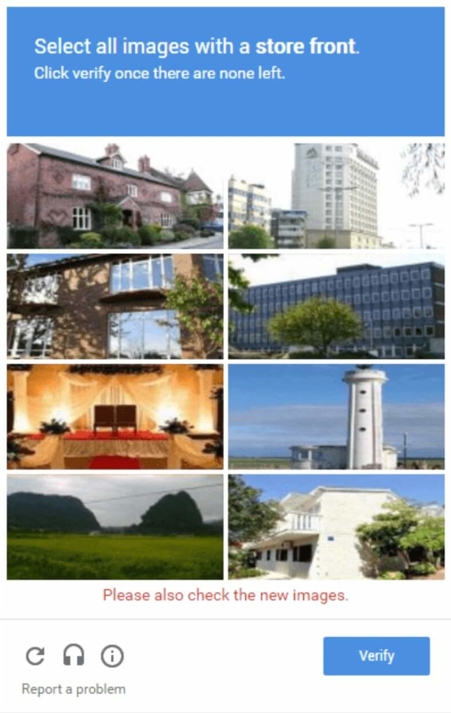
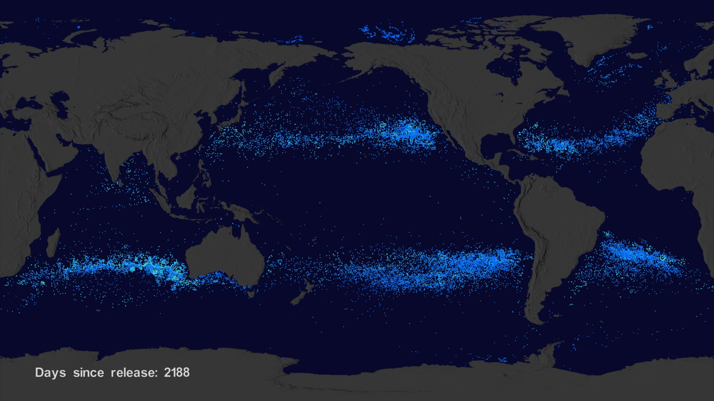

Your browser doesn't support the features required by impress.js, so you are presented with a simplified version of this presentation.
For the best experience please use the latest Chrome, Safari or Firefox browser.
WasteCopter Game
LIFO group
Nasa Space Apps Challange - Pisa '19
F. de Gioia, M. Marini, D. Turtulici, P. Dal Bo
Challange: Earth's Ocean - Trash Cleanup
Basic idea: Garbage Oceans Collection
How can Artificial Intelligence be able to do that?
First step: Database creation

Lets do it in CAPTCHA style...
...but more fun!

Data from Nasa
Difficulty of levels game based on:
- Ocean winds by EarthData database
- Garbage patch visualization experiment

Thanks for the attention
Se you next year!
LIFO Team